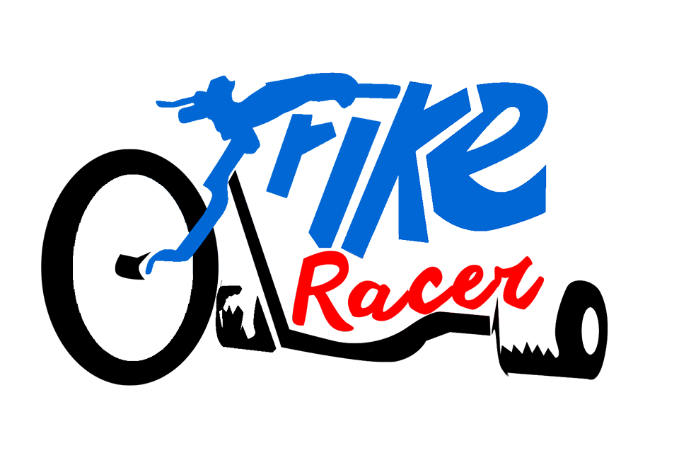
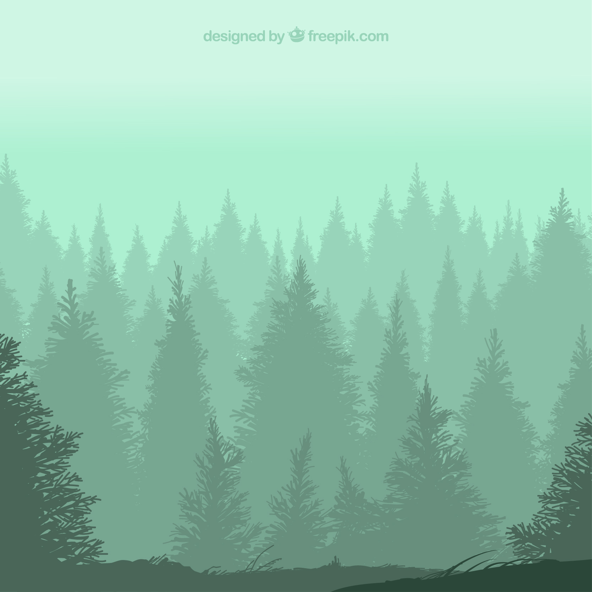

Nossos Jogos
Nós da Hercmor Games Studio, estamos a todo vapor trabalhando em dois jogos prestes a serem lançados: Trike Racer, para dispositivos mobile; e Trike Racer, para consoles e PC Gamer.
Trike Racer
Trike Racer é um jogo de corridas de trike com modos campanha e multiplayer, onde o jogador começa com um veículo improvisado e ao longo das corrigas vai ganhando Fama, que lhe permite correr em circuitos mais competitivos que disponibilizam prêmios especiais, e Trike Coin, que permite ao jogador estar sempre turbinando seu Trike com novas peças para deixá-lo com sempre com o melhor desempenho e garantindo suas chances de vitória.

The Florest World
Trike Racer é um jogo de corridas de trike com modos campanha e multiplayer, onde o jogador começa com um veículo improvisado e ao longo das corrigas vai ganhando Fama, que lhe permite correr em circuitos mais competitivos que disponibilizam prêmios especiais, e Trike Coin, que permite ao jogador estar sempre turbinando seu Trike com novas peças para deixá-lo com sempre com o melhor desempenho e garantindo suas chances de vitória.